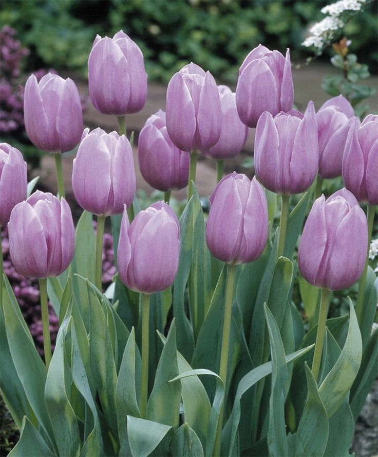
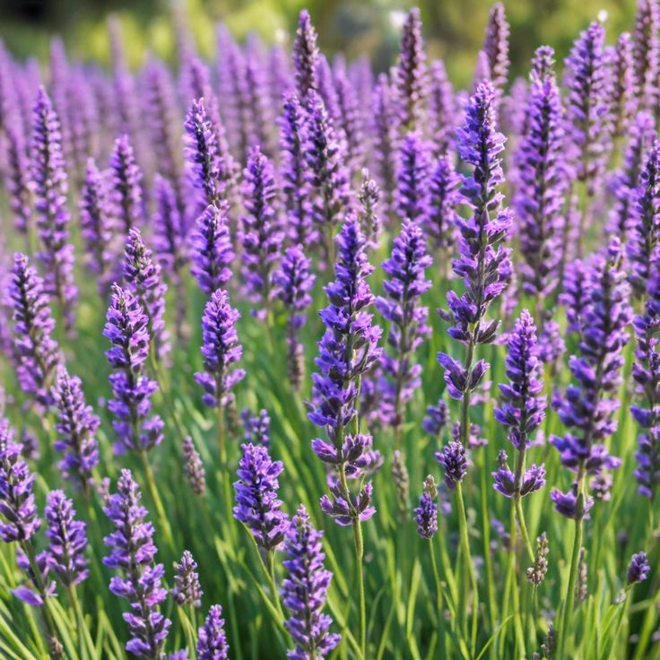
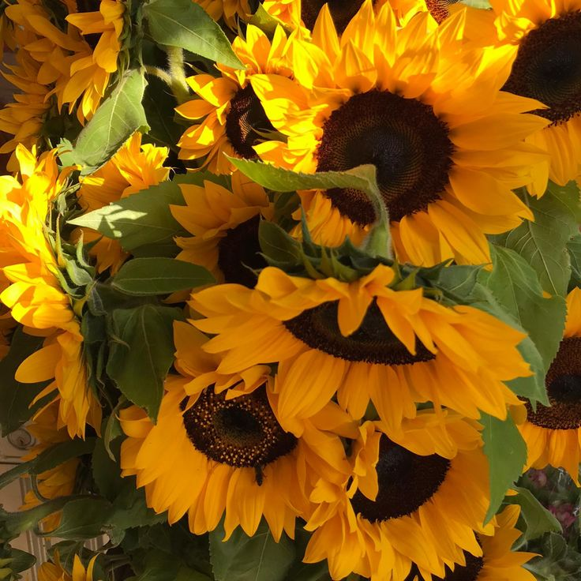
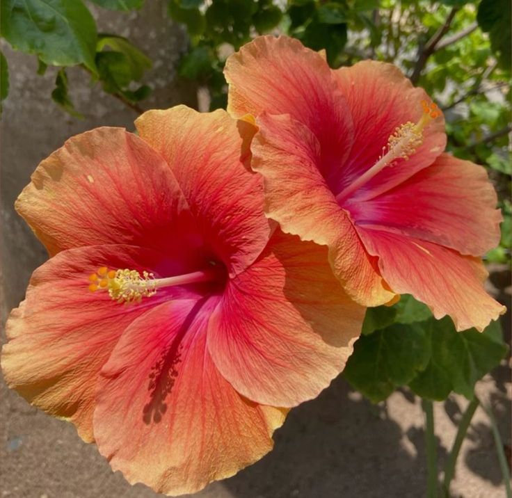
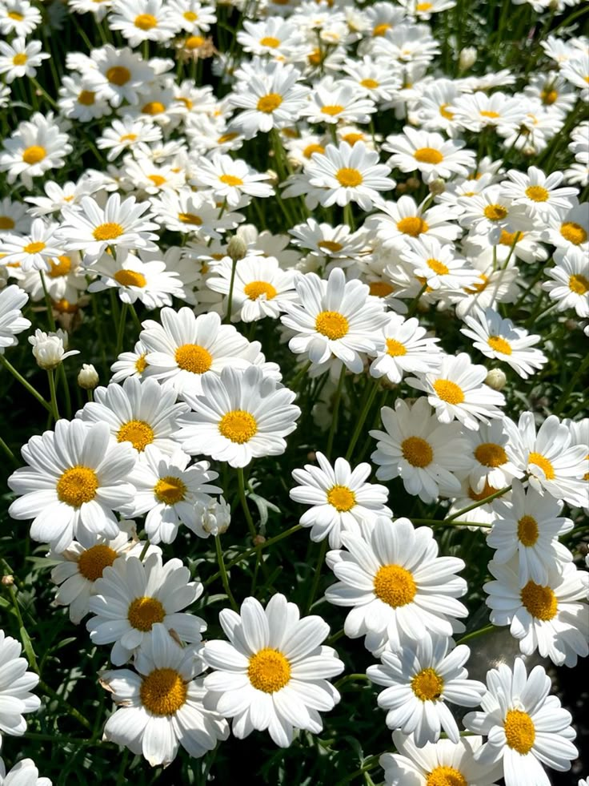

Sobre as flores
As flores são estruturas das plantas responsáveis pela reprodução. Elas existem há milhões de anos e apresentam grande variedade de cores, formas e tamanhos.
Curiosidades
- Existem mais de 400 mil espécies de flores no mundo.
- Algumas flores podem mudar de cor dependendo do solo.
- Certas espécies florescem apenas à noite.
- Algumas flores conseguem prever a chuva e fecham suas pétalas.
- Tulipas já foram consideradas mais valiosas que ouro.
Galeria de flores




